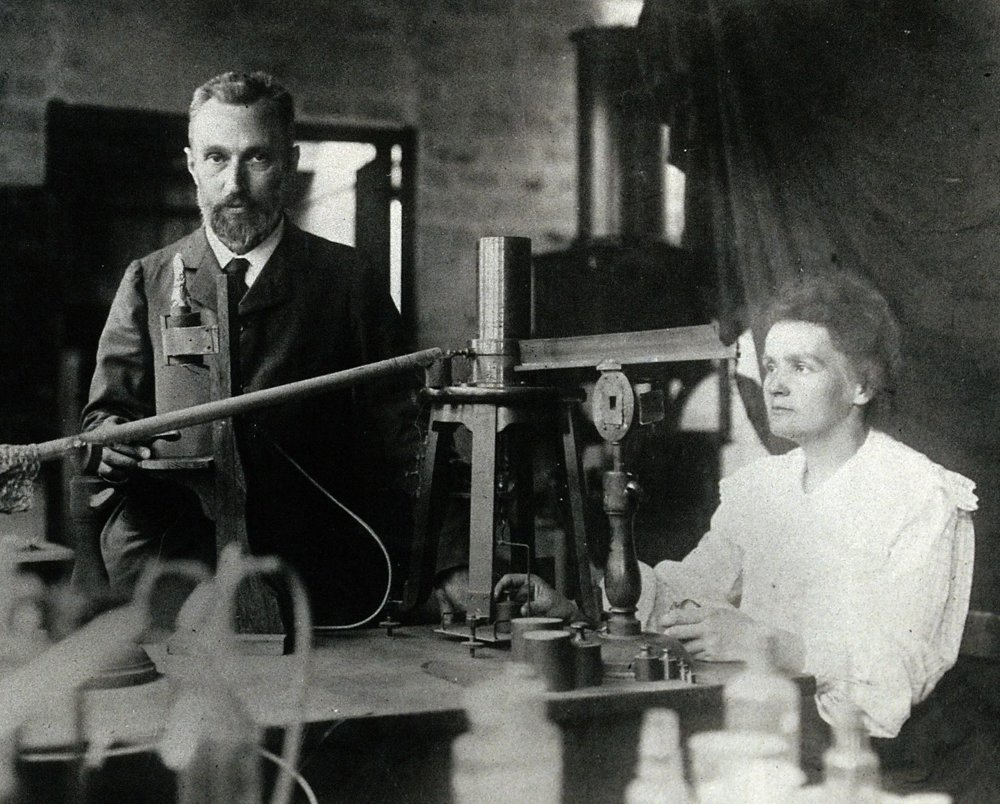
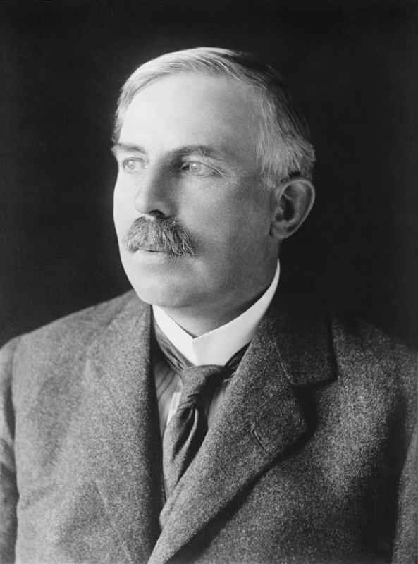

História da radiação
A descoberta da radioatividade no final do século XIX revolucionou a Física e provou que o átomo não era uma esfera maciça e indivisível.


Röntgen e Becquerel
Em 1895, Wilhelm Röntgen descobre os Raios X ao estudar tubos de raios catódicos. Meses depois, em 1896, Henri Becquerel observa que sais de urânio velavam chapas fotográficas mesmo no escuro, descobrindo a emissão espontânea de radiação.

Casal Curie: Rádio e Polônio
Marie e Pierre Curie investigam a pechblenda, cunham o termo "radioatividade" e isolam dois novos elementos muito mais radioativos que o urânio: o Polônio (Po) e o Rádio (Ra). Marie Curie tornou-se a primeira pessoa a ganhar dois Prêmios Nobel (Física em 1903 e Química em 1911).

Ernest Rutherford
Ao submeter as emissões radioativas a campos magnéticos e barreiras físicas, Rutherford identifica e nomeia as radiações Alfa (α) e Beta (β) (e posteriormente a Gama (γ), descoberta por Paul Villard), recebendo o Prêmio Nobel de Química em 1908.